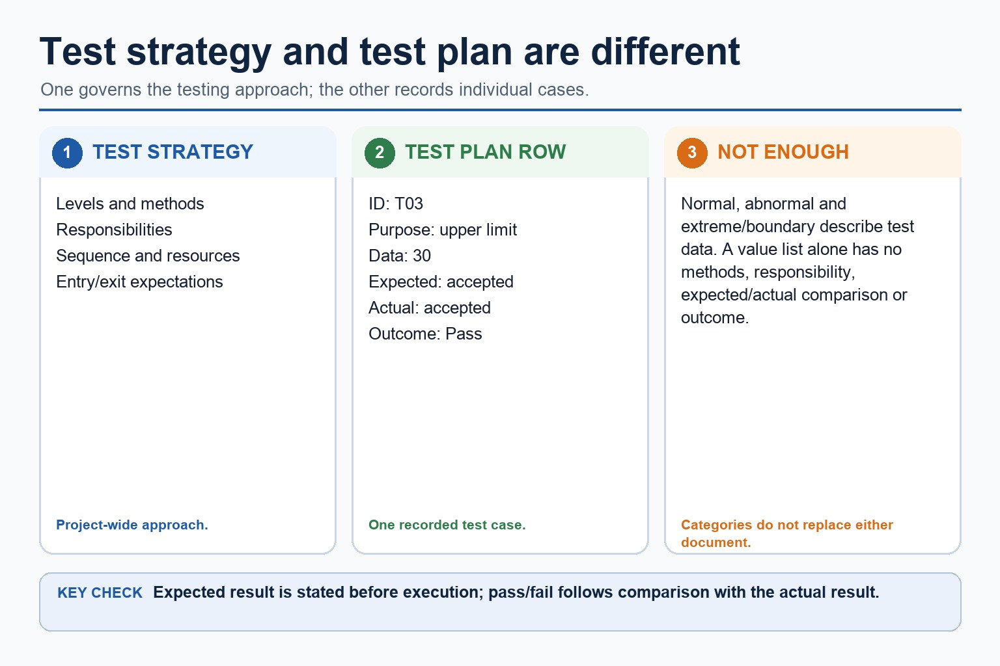

Quick route
Use the diagnostic, learning objectives, first worked example and foundation question. Stop once the learner can explain the central distinction accurately.
Cambridge AS9618 | Paper 2 | Section 12: Software development
Flexible-depth lesson
S12.06 | Visual relationships, mechanisms and worked examples.
Part 1 | optional depth
Recall S12.05 before starting this lesson.
Give one accurate definition or method step before continuing. If it is missing, revisit only that prerequisite.
Part 2 | explicit teaching
Complete the default-visible explanation and worked example before using the visual recap.
S12.06 · process
Alpha testing is performed internally before release; beta testing uses selected external users in realistic settings; acceptance testing checks the delivered system against agreed requirements. A strategy states levels/methods/responsibility, while a test plan records test ID, purpose, data, expected result, actual result and pass/fail.
Test the enhancement with data that exercises the new path and rerun regression tests for existing paths. Correcting a fault is corrective maintenance; adding or improving requested functionality is an enhancement and may be perfective maintenance.
A test strategy states the testing levels, methods, responsibilities, sequence and resources for the project. A test plan records individual cases with a test ID, purpose, data, expected result, actual result and pass/fail outcome.
Alpha testing is performed internally before release;
beta testing uses selected external users in realistic settings;
acceptance testing checks the delivered system against agreed requirements.
Alpha testing is performed internally before release;
beta testing uses selected external users in realistic settings;
acceptance testing checks the delivered system against agreed requirements.
Test login through review, construction, integration and release / Test an inclusive mark range / Three changes to one booking system / Add a Merit count without breaking PassCount: First dry-run the lockout counter and conduct a walkthrough in which peers inspect the algorithm. black-box tests valid, invalid and boundary inputs from requirements. Internal staff perform alpha testing, selected external users perform beta testing, and the customer performs acceptance testing against the agreed lockout behaviour.
Show the following targets in one connected answer, using a concrete example for each: test; strategy; plan.
Use these cards and diagrams to reinforce the explanation above; they are not a substitute for it.
Alpha testing is performed internally before release;
beta testing uses selected external users in realistic settings;
acceptance testing checks the delivered system against agreed requirements.
Diagram · 1 of 1

Show understanding of the need for a test strategy and test plan and their likely contents.
The syllabus requires understanding the need and likely contents; it does not require candidates to produce either document.
Part 3 | select by learner need
Question 1. What does a stub replace?
Answer: A called module/component not yet available.
Marking guidance: Award one mark for each distinct, technically accurate point or method step.
Common error: For the command word apply, perform that exact action; do not replace it with an unrelated fact.
Question 2. State two precise facts about test strategies and test plans.
Answer: The syllabus requires understanding the need and likely contents; it does not require candidates to produce either document. Alpha testing is performed internally before release; beta testing uses selected external users in realistic settings; acceptance testing checks the delivered system against agreed requirements. A strategy states levels/methods/responsibility, while a test plan records test ID, purpose, data, expected result, actual result and pass/fail.
Marking guidance: Award one mark for each distinct fact; do not credit a repeated point.
Common error: Do not repeat the same point in different words; each mark needs a separate idea or method step.
Question 3. Explain how test strategies and test plans would be applied in a suitable computing context.
Answer: Alpha testing is performed internally before release; beta testing uses selected external users in realistic settings; acceptance testing checks the delivered system against agreed requirements. A strategy states levels/methods/responsibility, while a test plan records test ID, purpose, data, expected result, actual result and pass/fail. Choose test data from the stated validation rule and give an expected result for each value. A label such as 'boundary' is insufficient unless the value really tests a stated limit. Classify the reason for the change, not the code edited. The same module could receive a corrective change for a crash, an adaptive change for a new operating-system interface, or a perfective change for faster search and a clearer result display.
Marking guidance: Each mark needs a relevant point linked to the stated context.
Common error: Do not copy the worked example unchanged; transfer the method and check it against the new context.
| Reference | Marks | Command word | Question type |
|---|---|---|---|
| 9618/21/S/25 Q6(a) | 4 | complete | recall |
| 9618/21/W/24 Q5(i) | 4 | complete | recall |
Index only: Cambridge question and mark-scheme wording is not reproduced on this public course page.
Part 4 | close when ready
Students often describe the lifecycle as a fixed checklist. Correction: development is iterative; findings can send a project back to earlier stages.